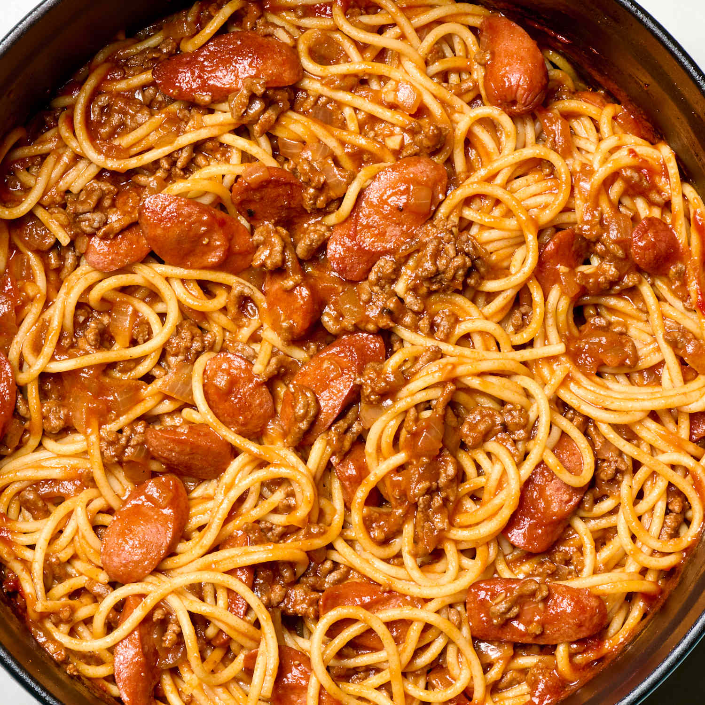

Spaghetti

Description
Filipino spaghetti is a sweet, savory, and cheesy twist on the classic Italian version, and it's a staple at Filipino celebrations.
Ingredients
Sauce
- 1 lb ground beef
- 3 hotdogs (Filipino-style or regular, sliced diagonally)
- 1 small onion, finely chopped
- 4 cloves garlic, minced
- 1 can (15 oz) tomato sauce
- 1/4 cup tomato paste (optional, for a richer sauce)
- 2–3 tbsp sugar (adjust to taste)
- Salt and pepper to taste
- 1 tbsp cooking oil
Pasta
- 1 lb (450g) spaghetti noodles
- Salt and water for boiling
- Parmesan cheese
Instructions
- Cook pasta - Boil water with a generous pinch of salt. Cook the spaghetti according to package directions until al dente. Drain and set aside. Toss with a little oil if you want to prevent sticking.
- Sauté - In a large pan, heat oil over medium heat. Sauté garlic and onion until fragrant and translucent. Add the ground meat and cook until browned. Break it apart as it cooks. Add sliced hotdogs and cook for 2–3 minutes.
- Liquify - Stir in tomato sauce, tomato paste (if using), and sugar. Add soy sauce and a splash of water or broth if the sauce is too thick. Simmer on low heat for 15–20 minutes, stirring occasionally. Adjust sweetness, salt, and pepper to taste.
- Assemble - Add sauce to pasta. Sprinkle generously with parmesan cheese.
Disclaimer
This recipe is from ChatGPT. I do not make my food this way.
Back